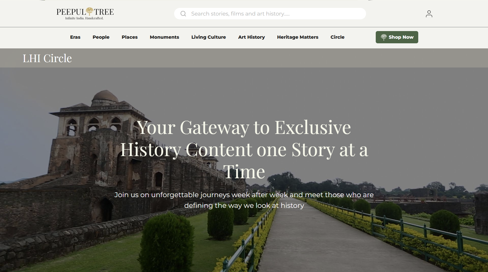

Helping a cultural platform raise $5M and find its first 20,000 users.
Live History India needed product traction, audience signals, and a fundable narrative — simultaneously, with no brand equity and no precedent for what a cultural commerce platform even was.

A platform combining Indian heritage storytelling with artisan commerce.
Live History India is a digital platform that publishes long-form historical and cultural content about the Indian subcontinent — stories of dynasties, craft traditions, monuments, and makers — and connects readers to artisan products tied to those narratives. Think editorial depth with a commerce layer sitting underneath it.
I joined as a core member of the Founder's Office at Peepul Tree Ventures, the parent company, working directly with the founders across product, content strategy, growth, and investor relations. The mandate was clear and difficult: launch the platform, get it to a state of demonstrable traction, and build the data story that would make institutional investors want in.
Three problems that could not be solved sequentially.
The platform faced a classic cold-start problem with compounding difficulty. No audience meant no commerce. No commerce meant no artisan relationships. No artisan relationships meant nothing to show investors. And investors needed proof before the next round could close — which was the funding needed to build the audience in the first place.
The strategic challenge was that all three loops — content audience, artisan supply, and investor narrative — had to move at the same time. Solving them in order would take too long. They had to be solved in parallel, each feeding signal into the others.
A further complication: there was no template for this. Cultural-heritage commerce platforms do not have established playbooks. Most analogs (Artsy, Etsy, Atlas Obscura) occupied different adjacencies. We were operating in whitespace, which meant we had to generate our own proof of concept while building the thing.
"We did not need a big audience. We needed the right signal from a small one — and we needed to know exactly what to measure."
The framing that shaped how we structured the first 90 days
Ship fast. Measure everything. Turn signal into narrative.
I drove the MVP launch across three commerce channels simultaneously — Shopify (owned), Etsy (discovery), and Amazon (distribution reach) — within the first eight weeks. This was not a phased rollout. Running all three in parallel let us compare acquisition cost, conversion quality, and retention cohort by channel — data that a single-channel launch could not generate.
For audience growth, I built and seeded a 500+ creator micro-community across WhatsApp and Facebook groups, recruiting historians, heritage travel writers, craft enthusiasts, and cultural educators. This community was not just a distribution channel — it was a content source and a qualitative research layer. We could test framing, headline angles, and product descriptions directly with people who cared deeply about the subject matter.
Weekly, I tracked cohort retention, GMV per content category, and artisan product attachment rate (the percentage of content readers who clicked through to a product within a session). These three numbers became the core of the investor data story: we were not just building an audience, we were building a monetisable one.
Across product, content, community, and investor relations — simultaneously.
On the product side, I collaborated with the tech team to configure the Shopify storefront and set up the analytics instrumentation — GA4, Hotjar heatmaps, and a lightweight CRM to track repeat visitors. On the content side, I built the editorial calendar and briefed the first cohort of writers, establishing the structure that connected each story to at least one purchasable craft object.
The creator community was seeded through direct outreach across Instagram, Twitter, and LinkedIn — identifying people whose existing content overlapped with Indian history, craft, or heritage travel. The value exchange was simple: early access to long-form content before publication, in exchange for sharing it with their audiences.
I also owned a significant portion of the investor deck narrative, translating weekly data into the cohort charts and retention curves that became the traction section of the Series A materials.
Traction in 90 days. Capital at the finish line.
The platform reached 20,000+ monthly visitors within three months of launch — a number that, crucially, came with a clear data story: which content categories drove the most return visits, which artisan product clusters had the highest attachment rate, and what the 30-day retention curve looked like for newsletter-acquired users versus organic search.
Artisan product sales doubled between the first and third month, driven by the content-to-commerce attachment model — readers who came for the historical narrative converted to buyers at a meaningfully higher rate than category benchmarks for comparable commerce properties.
The early traction data anchored the investor narrative that helped close a $5M seed round. The numbers were not large by growth-stage standards, but they were structured, reproducible, and pointed clearly at a thesis that held. That combination — honest metrics with a coherent story — is what moved investors.
Investor narrative is a product problem, not a communications problem.
The mistake most early-stage teams make with fundraising is treating the investor deck as something you build after you have results. We treated it as something we built while designing the launch — which forced us to instrument the right things from day one, not scramble to find a meaningful number three months later.
The specific lesson: decide what metric proves your thesis before you launch, build the infrastructure to track it cleanly, and then run the experiment. If you do that, the story writes itself. If you do not, you spend six weeks in post-hoc rationalisation — and sophisticated investors can see that clearly.